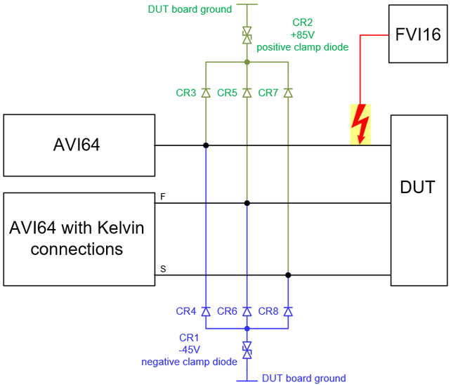

AVI64 HV (High-Voltage) protection
An AVI64 channel can be damaged by voltages higher than the compliance range (-44 V, +84 V), and must be protected from being damaged by other high-voltage cards such as the FVI16.
Root causes for HV damage
- A defective DUT may connect high-voltage input pins to pins, where low-voltage cards are connected.
- Unintentionally closed switches can connect high-voltage pins directly to pins of low-voltage cards.
- High-voltage pulses created through switching off an inductive load.
HV test head cards and cards for which protection is recommended
This HV-protection application is recommended for the AVI64, which can be damaged by high-voltage card FVI16.
All test head cards provide basic protection against electrostatic discharge (ESD) but require additional protection against unintentionally applied pulses of high-voltage cards. The protection is required in case a high-voltage card is set to a voltage that exceeds the maximum external input voltage (compliance range) of the low-voltage cards.
For more information refer to HV protection - Compliance range.
Solution
The proposed high-voltage protection for the AVI64 consists of fast switching diodes and two different TVS-diodes (Transient Voltage Suppressor diodes), which are connected to DUT board ground. The combination of the TVS-Diodes and the fast switching diodes appear as clamp diodes that clamp voltages above +85 V and below -45 V.
Caused by the asymmetrical voltage specification of the AVI64, one TVS-diode is required for the positive voltage, and one TVS-diode is required for the negative voltage. To separate between the positive and negative voltage, two fast switching diodes are required per protected line. One of the two diodes is conducting at positive voltages, and the other at negative voltages.
Circuit
The following diagram shows an example of how to connect the diodes to a single signal line and a Kelvin connection. We recommend connecting the diodes to test head cards with Kelvin connections both on the force line and on the sense line.
- The blue marked part is active if a negative voltage is connected and is clamping at -45 V.
- The green marked part is active if a positive voltage is connected and is clamping at +85 V.

Bill of materials
| Reference designator | Description | Comment |
|---|---|---|
| CR1 | SMLJ45A |
This TVS-diode is recommended for the negative voltage (AVI64 is specified up to -40 V), which has a working peak reverse voltage of ± 45 V. Maximum reverse leakage current at ± 45 V: 2 μA |
| CR2 | SMLJ85A |
This TVS-diode is recommended for the positive voltage (AVI64 is specified up to +80 V), which has a working peak reverse voltage of ±85 V. Maximum reverse leakage current at ±85 V: 2 μA |
| CR3, CR4, CR5, CR6, CR7, CR8 | CMOD3003 | This type is recommended for the switching diode, which are separating negative and positive voltage. |
Hints for the layout
- The diodes must be placed near the pogo pins of the low-voltage cards to protect the pins against cross-talk from pulses on other lines.
- The conductive tracks and vias between the diodes and clamp regulators will additionally cause an increase of the voltage. We recommend using a low resistive and low inductive design for these connections.
Selection of the diodes
- The diodes must be able to carry the maximum expected pulse current of a high-voltage pulse.
- The forward voltage must be as low as possible to maximize the headroom between the operating range and the compliance range of the protected channels.
- The small-signal resistance of the diodes must be as low as possible to minimize the maximum voltage for high-current pulses.
- The capacitance of the diodes (switching diodes and TVS-diodes) must be as low as possible.
- The maximum reverse leakage current of the diodes must be as low as possible.
Functional changes
- Introduced in SmarTest 7.5.4